Наша пасека
Ниже — несколько фотографий с нашей пасеки и процесса работы. Всё по-настоящему, без постановки.
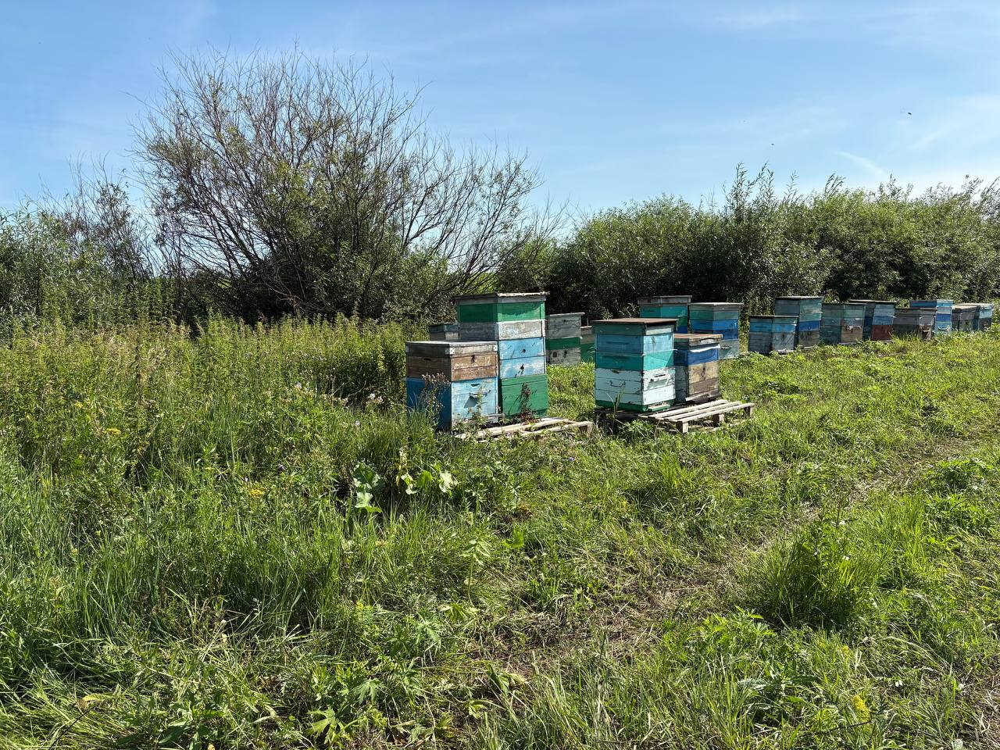
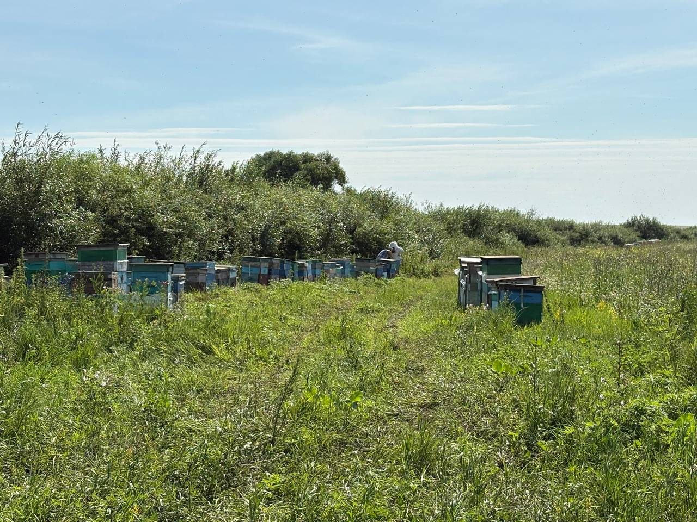
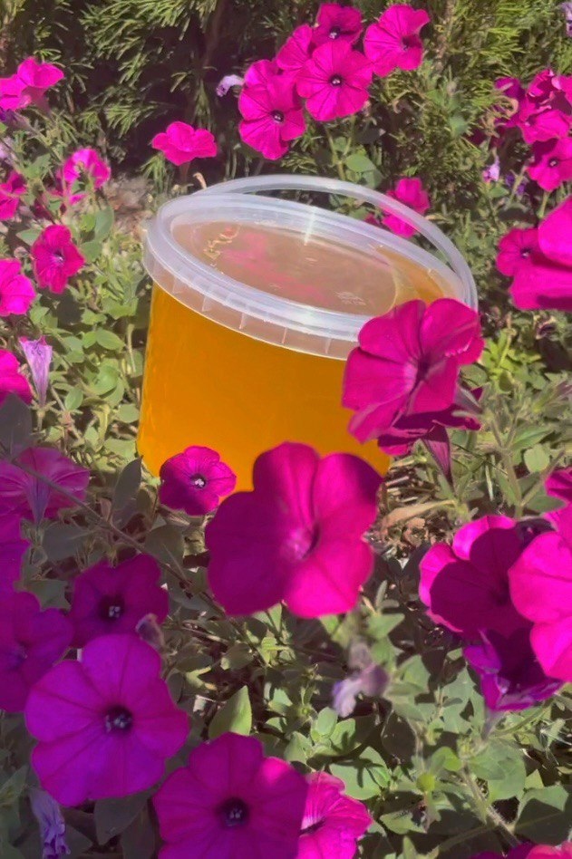
 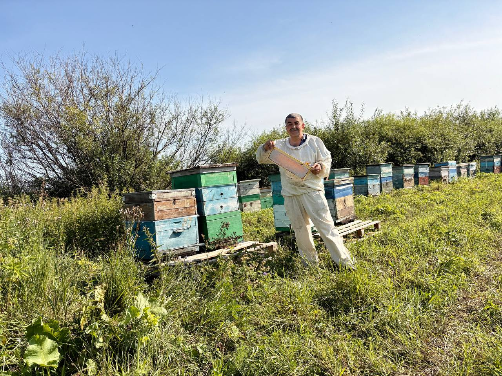
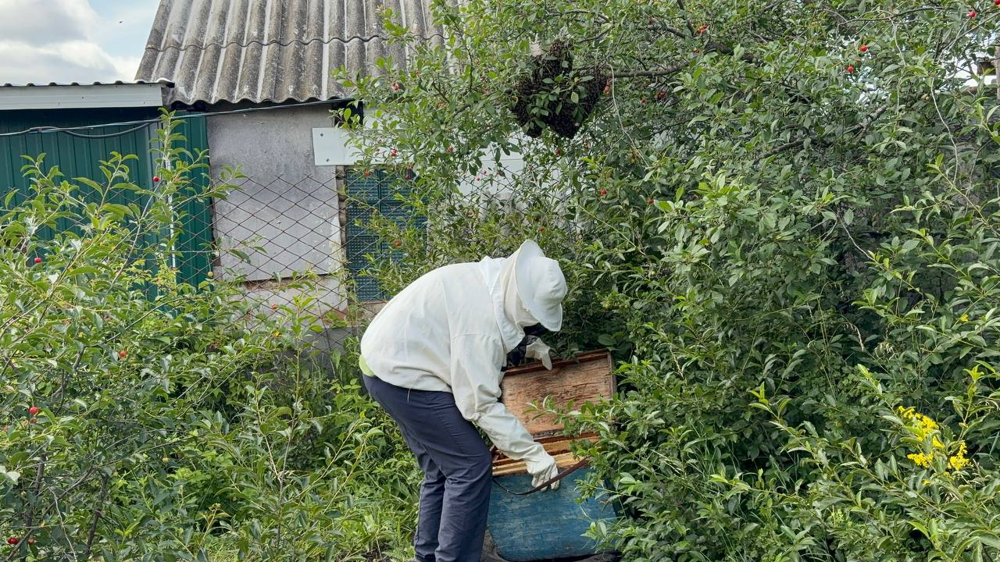
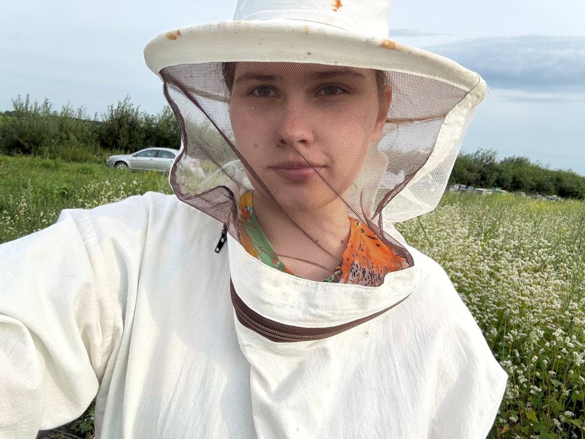
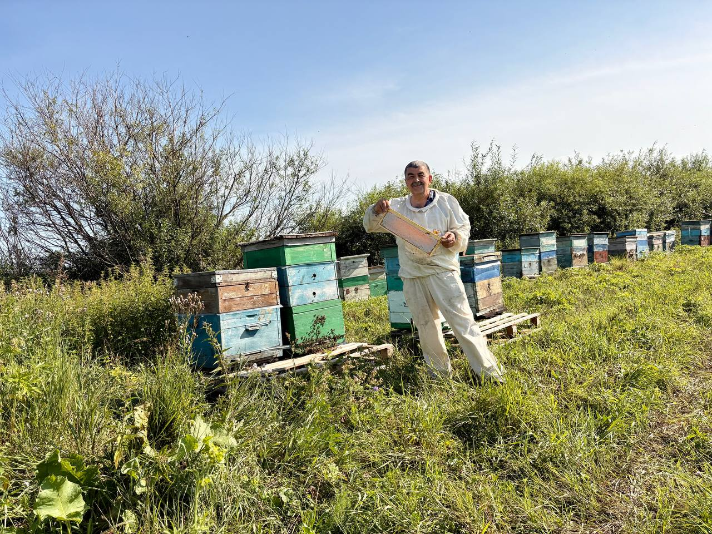
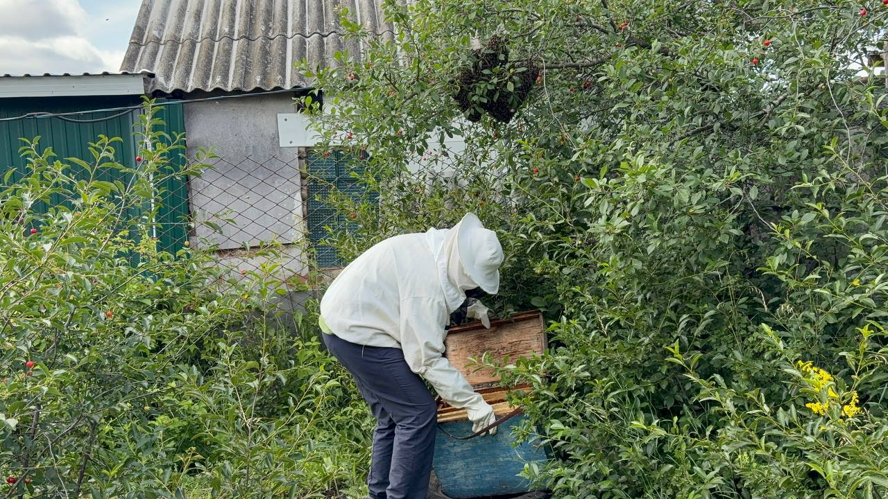
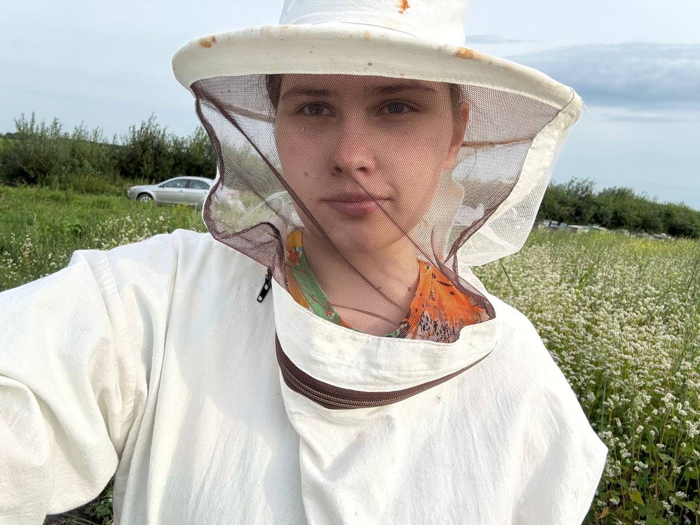
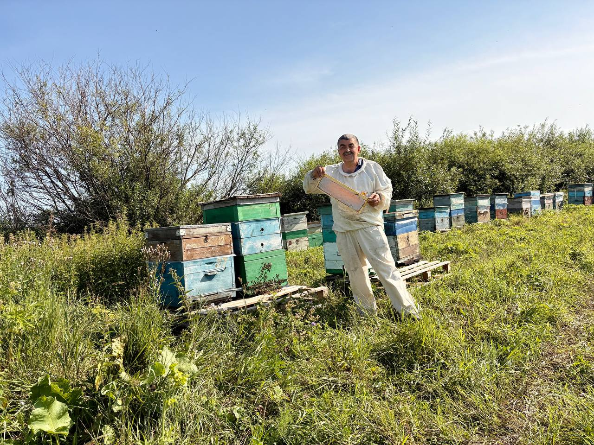
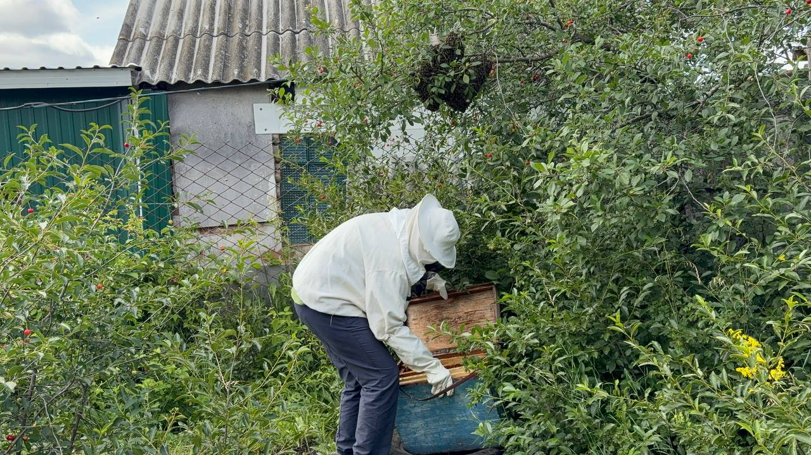
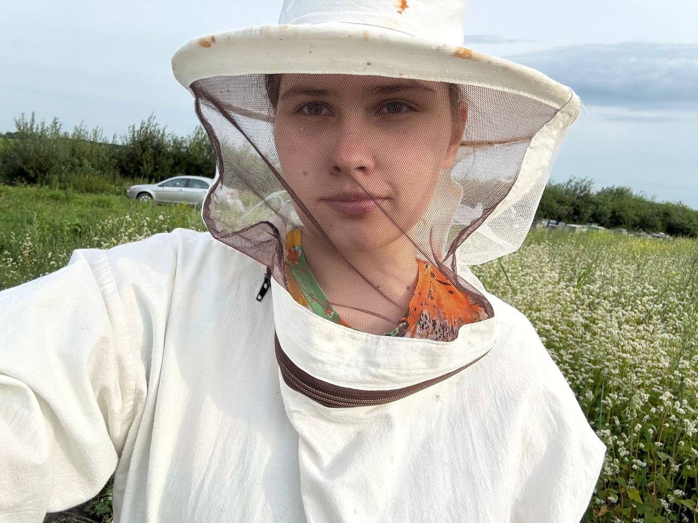
Семейное пчеловодство с душой, уважением к природе и пчёлам
Пасека «АхМёдов» — это семейное дело, которое началось более 15 лет назад с нескольких ульев и большого интереса к пчёлам. Со временем увлечение переросло в полноценное хозяйство, где на первом месте всегда было качество, а не объёмы.
Мы работаем без посредников и лично отвечаем за каждый этап — от ухода за пчёлами до фасовки мёда в банки. Именно поэтому мы уверены в том, что продаём.
Ниже — несколько фотографий с нашей пасеки и процесса работы. Всё по-настоящему, без постановки.
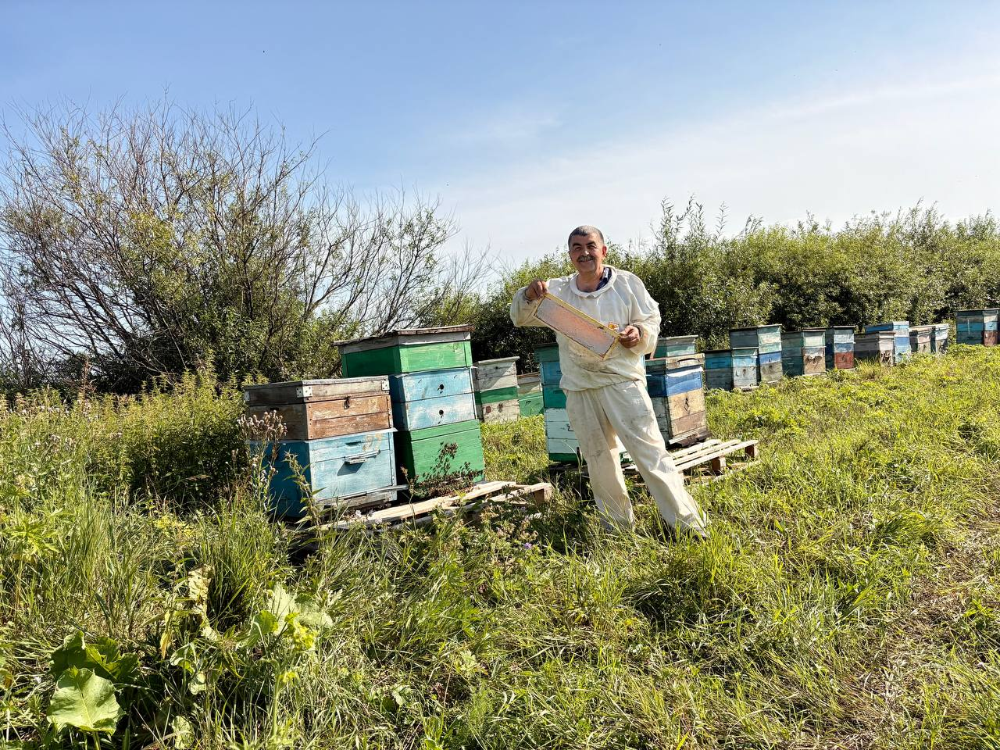
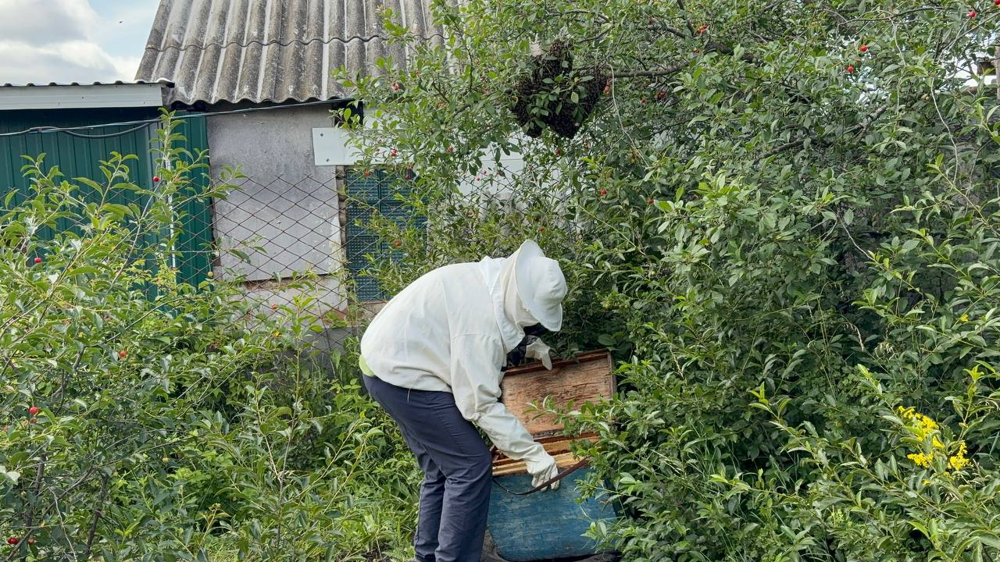
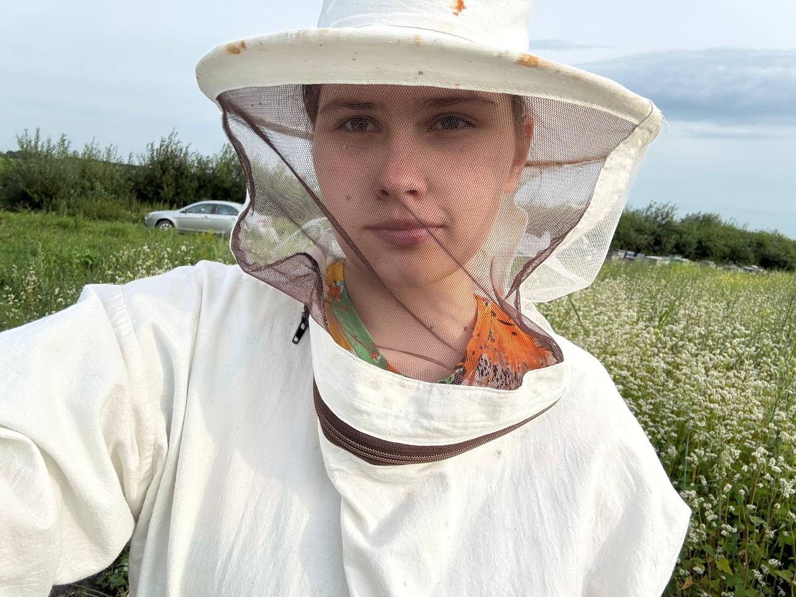
Мы не используем антибиотики и агрессивную химию. Здоровые пчёлы — основа качественного мёда.
Мы не кормим пчёл сахаром и не подмешиваем сиропы. Мёд может кристаллизоваться — это нормально.
Пасека расположена вдали от трасс, заводов и сельскохозяйственной химии.
Мы искренне считаем, что настоящий мёд — это не просто продукт, а часть здорового образа жизни. Нам важно, чтобы люди знали, каким должен быть натуральный мёд на вкус и по свойствам.
Именно поэтому мы не гонимся за массовым производством и предпочитаем продавать меньше, но честно.
Перейдите в каталог и выберите сорт, который подойдёт именно вам.
Перейти в каталог